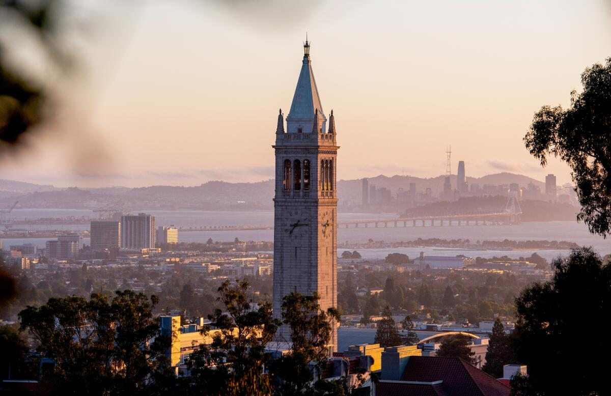
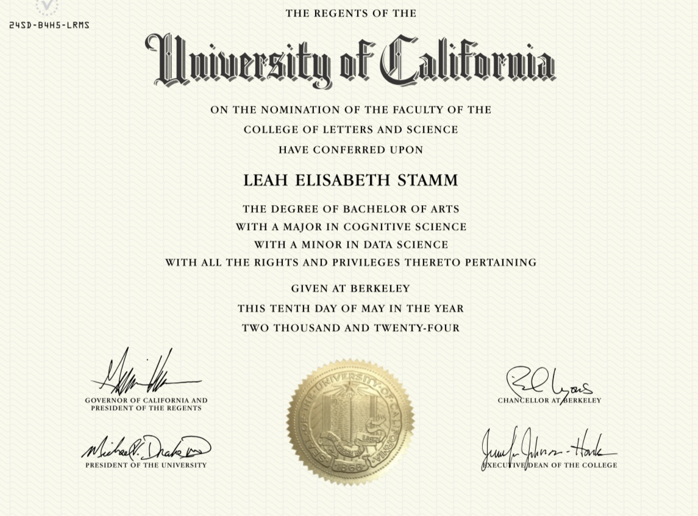

Life Updates!

This past May, I graduated from UC Berkeley with a B.A. in Cognitive Science and a minor in Data Science. Four years, countless memories, and a lot of self-discovery later, I’ve got a degree!

I was surrounded by some truly amazing people— entrepreneurs, scientists, storytellers. These were the kind of people who didn’t just challenge your ideas; they pushed you to question the very framework you were operating in. My mind was blown a million times over throughout these four years.
And then, there’s the place: Berkeley, California. Nestled in the hills, overlooking the San Francisco bay, the campus—with its eucalyptus grove, the white marble of Doe Library, and the towering campanile—carries the weight of history. Berkeley is where world-changing ideas are born, and you can feel it in the atmosphere. Growing up in Midwest suburbia, California was the stuff of dreams, and Berkeley will always hold a special place in my heart.
The Cognitive Science program, in all its interdisciplinary glory, expanded my mind in every direction. I took courses across the fields of neuroscience, psychology, computational modeling, philosophy, linguistics, and anthropology. It is the study of intelligence—emotional, human, and artificial—and I learned to understand how people think, feel, react and behave.
Mostly, though, it inspired curiosity: curiosity to keep learning and keep asking questions.
The more I learned, the more I realized how little I knew. But that’s the beauty of it—realizing how little you know makes the world feel bigger, richer, and full of possibility. And what a time to be curious! Change is here, and it’s happening fast.
If you’re interested in discussing any of the fascinating topics of or opportunities in cognitive science, data science, AI ethics or the like, I am open to chatting on LinkedIn at les02@berkeley.edu, or leah2stamm@gmail.com.
Go Bears forever!